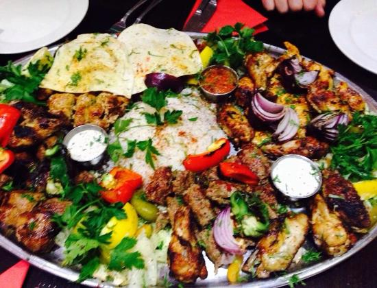

Authentic Lebanese Restaurant cuisine, beautiful new decor, friendly and hospitable staff in the heart of Durham city centre.
A perfect location for a comfortable evening out with the family, a catch up meal with friends or even sharing a romantic bottle of wine.
Contemporary relaxed fine dining riverside restaurant.

Durham's Premier and Original Tea Rooms, serving the finest tea and coffee from the heart of Durham City.

Easygoing restaurant and bar open from brunch until dinner for American-style steaks and burgers.

Rustic wood tables line this cosy coffee shop for artisan roasts, light lunches and homemade cakes.